Send whatever you've got, in whatever state — a couple of lines typed on a phone, a list of names, a thing that went wrong, a meal worth remembering, a person you met. It gets written up, filed under the right leg, and where it changes the advice elsewhere on the site, the other pages get updated to match.
Useful when you have it: roughly when, roughly where, and who was involved. Everything else is optional. Photographs can be dropped alongside and captioned.
Two kinds of entry are worth separating:what happened, which lives here, and what we learned about the place, which goes on Field notes. If something is both, it gets written up here and cross-linked there.
Kathmandu Valley
26 – 28 September · Patan, Boudhanath, Pashupatinath
Nothing filed yet
The arrival, the first evening in Patan, the temple day. Anything from the Indra Jatra crowds if you made it up to Durbar Square.
Bhutan
28 September – 6 October · Thimphu, Punakha, Phobjikha, Paro, Bumdra
Mon 28 September · KB401 Kathmandu → Paro
The flight in, along the roof of the world
From the left-hand side, heading east: most likely Everest on the left and Makalu, the clean pyramid, on the right.
A favourite part of the whole trip, and it lasted barely an hour. Sitting on the left paid off: once the plane climbed out of the valley the whole range lined up along the window — snow from one side of the frame to the other, the high summits standing clear of everything else, and the Tibetan plateau a flat brown line beyond. Worth every bit of the fuss about seat allocation.
DrukairEverestleft side
Mon 28 September · Paro International Airport
Down between the hills, and out onto the apron
Paro: no jet bridges, no terminal buses — down the steps and across the tarmac, with the valley wall close enough to count the trees.
After the Himalaya, the descent: the plane threads down the Paro valley with forested ridges on both sides before a last turn onto the runway, which is why only a small group of specially trained pilots are cleared to fly in. Then the steps, warm sun, thin clean air at about 2,200 m, and the first look at Bhutanese buildings — even the airport is built in the traditional style, painted window frames and all.
ParoDrukairarrival
Mon 28 September · Thimphu
A capital with no traffic lights
The pavilion on Norzin Lam, Thimphu's main street, where the traffic is still directed by hand.
Thimphu famously has no traffic lights. One was put up once, and residents complained it was too impersonal, so it came down again and the police went back to directing the junction from this painted pavilion — every gesture crisp, white gloves and all. Watching it for a few minutes is a fair introduction to the country: everything a little slower, more deliberate and more decorated than it strictly needs to be.
Thimphustreet life
Mon 28 September · School of Arts and Crafts, Thimphu
Printing our own prayer flag
Lungta printing: cloth over an inked woodblock, rubbed by hand, with a student keeping it straight.
The school teaches the thirteen traditional crafts — painting, woodcarving, sculpture, embroidery and the rest — and visitors get to try one. Ours was printing lungta, the "wind horse" prayer flags you see strung across every pass and bridge: the cloth goes over a carved and inked woodblock and is rubbed until the horse, the prayers and the four guardian animals come through. The five colours stand for the elements, and the idea is that the wind carries the prayers off the flag. Having made one, we look at every string of them differently now.
Thimphucraftsprayer flags
Tue 29 September · Motithang Takin Preserve, Thimphu
The national animal, assembled from leftovers
A takin picking its way across the stream in the preserve above Thimphu.
The takin looks as if it was put together from spare parts, and according to Bhutanese legend that's exactly what happened. In the 15th century the saint Drukpa Kunley — the "Divine Madman", Bhutan's most beloved and least respectable holy man — was asked by villagers to perform a miracle. He demanded a whole cow and a whole goat for lunch, ate both, then stuck the goat's head on the cow's skeleton, snapped his fingers, and the creature got up and wandered off to graze.
Zoologically it's a goat-antelope, closest to the musk ox and the sheep, and built for steep cold slopes: thick oily coat, a big Roman nose that warms the air on the way in, and a weight of up to 350 kg on surprisingly nimble legs. It became the national animal in 2005. The preserve exists by accident — Thimphu once had a small zoo, which the Fourth King closed as un-Buddhist, but the released takin refused to leave and kept wandering the streets of the capital looking for food, so they were given this patch of hillside forest instead.
ThimphuwildlifeDrukpa Kunley
Tue 29 September · Wangditse Lhakhang, above Thimphu
The walk up to Wangditse
The trail through the pines, strung with lungta.Wangditse on its ridge, with Thimphu down in the valley.Inside the courtyard: carved, painted eaves and flowers on every step.
A walk along the hillside above the city — through blue pine, under strings of prayer flags, and out onto an open ridge with Thimphu laid out below. Wangditse Lhakhang was founded in 1715 and is one of the oldest temples around the capital; after centuries of earthquakes and wear it was carefully restored in recent years, which is why the woodwork looks so fresh.
On the flags: the coloured ones along the trail are lungta, like the one we printed the day before — blue, white, red, green and yellow for sky, cloud or air, fire, water and earth, always hung in that order. Each time the wind moves them the prayers are thought to be carried outward, so a flag fading to grey is doing its job. The tall white flags on poles, like the cluster beside the temple, are a different thing: manidar, raised in sets of 108 for someone who has died.
Thimphuwalkprayer flags
Tue 29 September · Lunch
Potato momos and ting momos
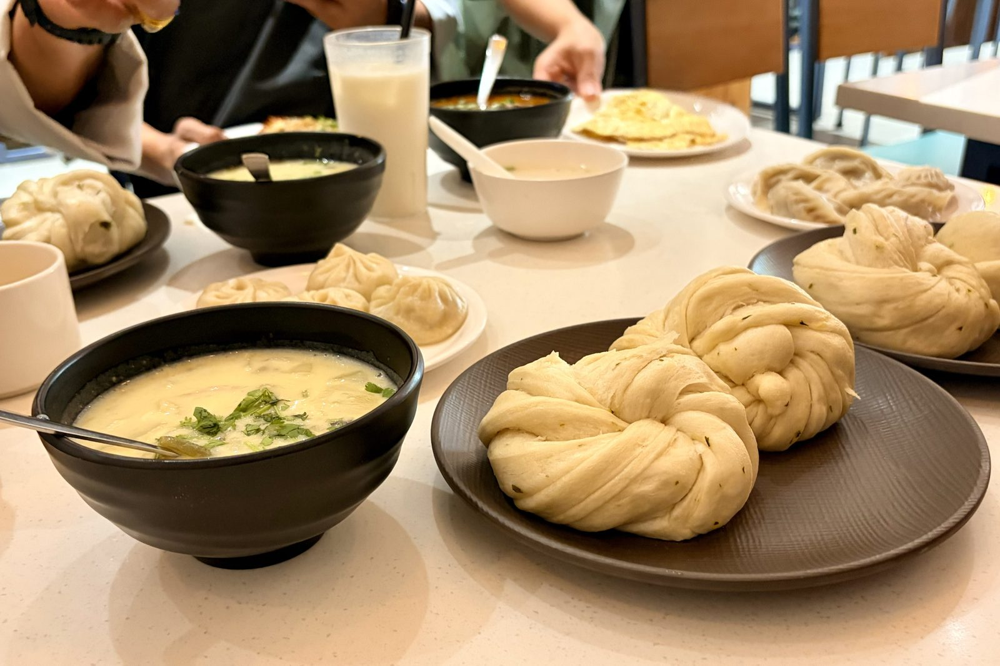
Ting momos in front — twisted, steamed, no filling — with potato momos and soup behind.
Momos came over the mountains from Tibet and are now as Bhutanese as they are Nepali, but the fillings here lean vegetarian: potato, cabbage and above all cheese, often with a hit of chilli. That isn't only taste. Killing animals sits badly with Bhutanese Buddhism, so very little slaughtering happens in the country — most of the meat on a Bhutanese menu has come in from India, and in the holy months of the lunar calendar its sale is banned altogether.
The ting momo (or tingmo) is the plain one: a sheet of dough brushed with oil, folded and twisted into a knot, then steamed. It has nothing inside, and isn't meant to — it's the bread you tear up to mop a curry or a bowl of soup.
foodmomos
Tue 29 September · Dochula Pass, ~3,100 m
108 chortens on the pass
The Druk Wangyal chortens, with the eastern Himalaya hiding behind the cloud.
The road from Thimphu to Punakha crosses the range at Dochula, and the top of the pass is crowned with the 108 Druk Wangyal chortens — 108 being the sacred number in Buddhism, the number of beads on a mala. They're recent: built in 2004 by the eldest Queen Mother, Ashi Dorji Wangmo Wangchuck, as a memorial for the Bhutanese soldiers killed in December 2003, when the army drove Indian separatist militants out of their camps in the southern forests. The temple on the hillside beside them honours the Fourth King, who led the troops himself.
On a clear day — mostly winter mornings — the whole eastern Himalaya lines up behind them, including Gangkar Puensum at 7,570 m, the highest mountain in the world that has never been climbed. Bhutan closed its high peaks to mountaineering in the 1990s out of respect for the gods believed to live on them, so it will likely stay that way. We got clouds instead, which at 3,100 m is the usual deal.
Dochulachortenshistory
Tue 29 September · Punakha
A short walk in Punakha
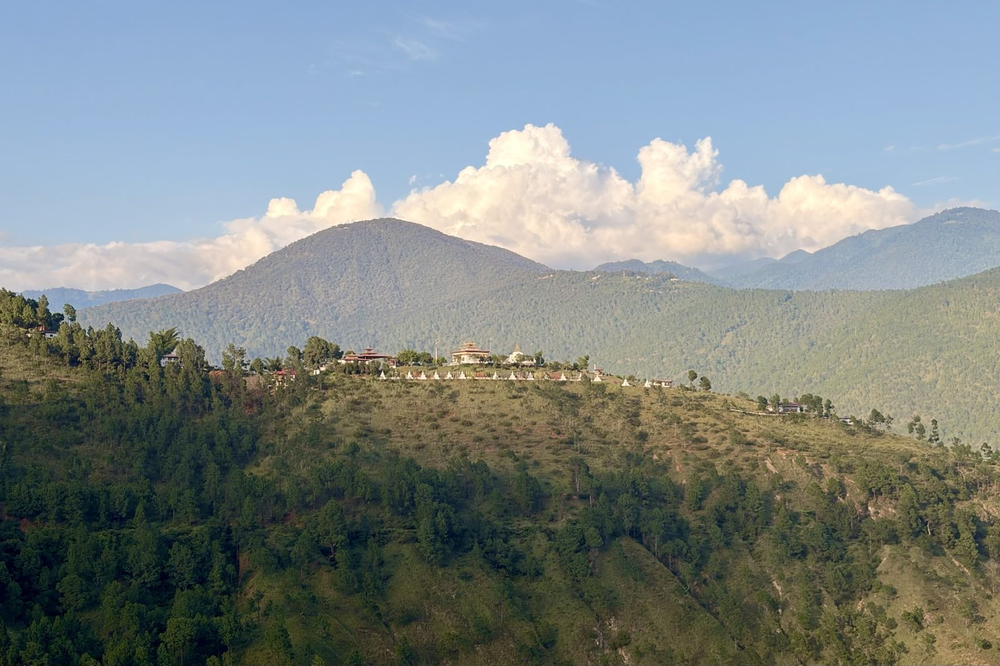
A temple and its row of chortens catching the evening light on the ridge across the valley.
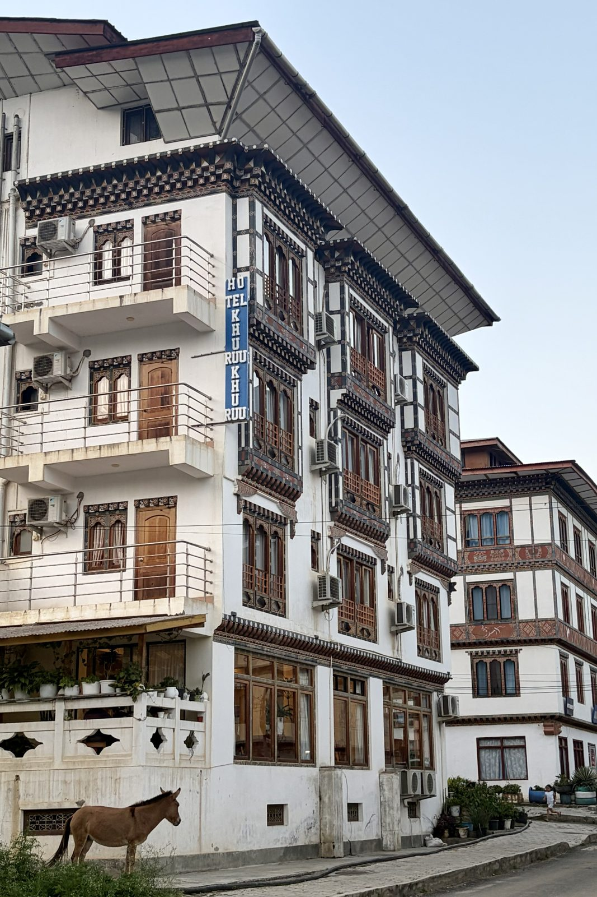
Hotel Khuruu Khuruu, named after the national darts game, with a donkey on the verge.
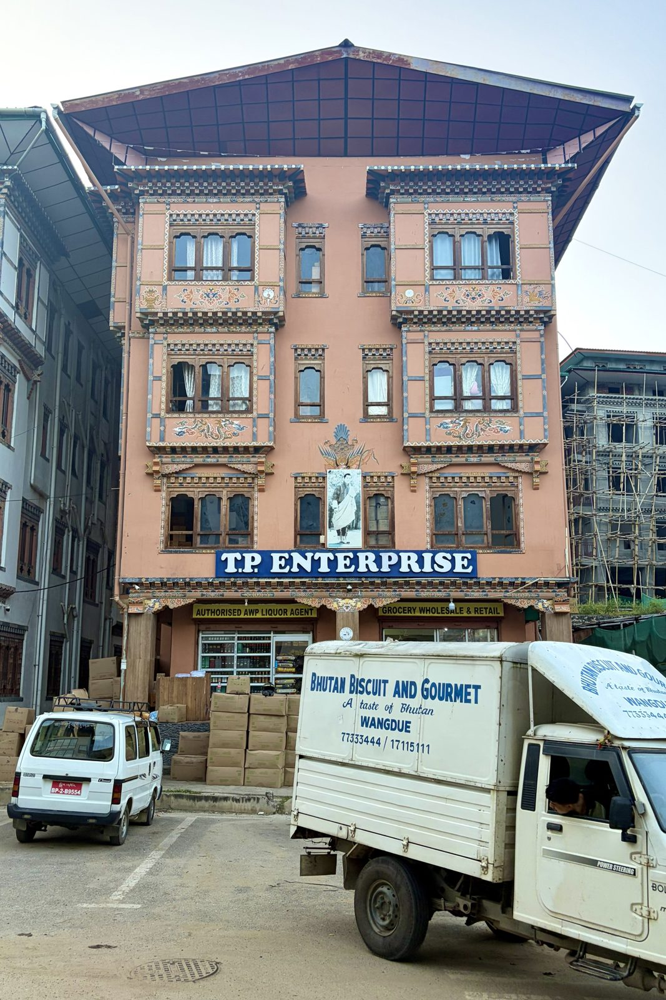
A grocery wholesaler, dressed like a small palace, with the royal portrait over the door.
After the cold of Dochula, the road drops more than 1,800 m into Punakha, and it feels like a different country: warm, green, rice terraces down by the rivers. Punakha was Bhutan's capital until 1955, and the valley is low enough to be where the monastic body moves for the winter.
The walk round town shows the rule you start noticing everywhere: by law, every building in Bhutan has to look Bhutanese. A grocery wholesaler, a mid-range hotel, a concrete block still in its bamboo scaffolding — all get the carved wooden window bays (rabsel), the painted lotuses and dragons, and the wide roof raised on a gap above the top floor, which in a farmhouse is open loft space for drying hay and chillies. Above the door, the royal portrait — you find it in every shop, office and restaurant.
And the hotel name: khuru is the national darts game, played with heavy hand-made darts thrown at a small target 20 metres or more away — with the opposing team standing near the target, shouting and dancing to put you off.
Punakhaarchitecturekhuru
Tue 29 September · Dhumra, Punakha
Night at Dhumra
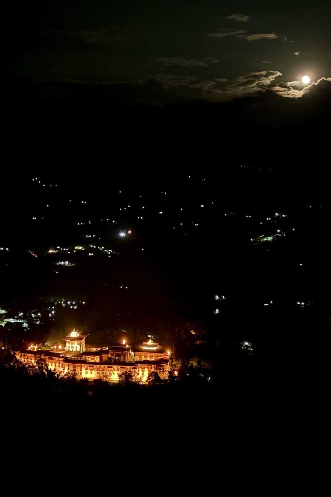
Punakha Dzong lit up in the valley below, and a nearly full moon over the hills.
The first of two nights at Dhumra, on the hillside above the valley. After dark the whole landscape goes black except for a scatter of farmhouse lights — and Punakha Dzong, floodlit gold, looking like it's floating. The moon was a few days past full, bright enough to throw shadows.
Dzongs are fortresses in name only now: they are still working buildings, half monastery and half district government, with monks in one courtyard and civil servants in the other.
PunakhaDhumranight
Wed 30 September · Farm homestay, Punakha valley
A morning in a farmhouse
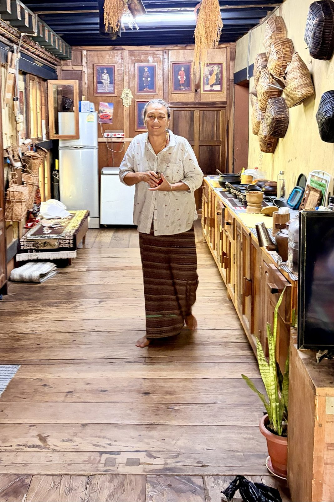
The farmhouse kitchen: baskets on the wall, rice drying from the beams, the kings on the back wall.
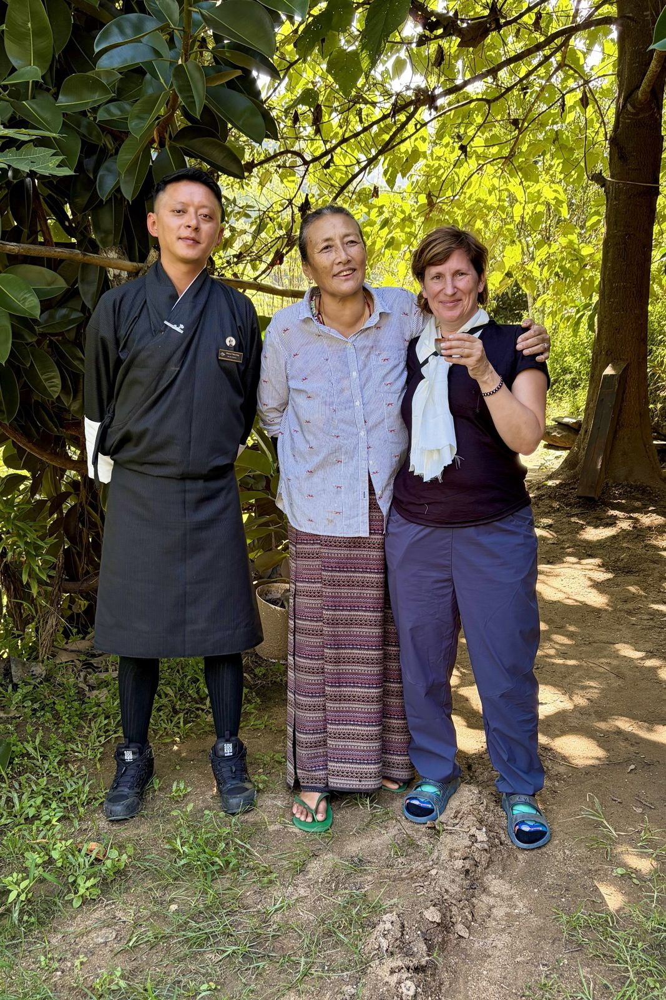
Our guide, our host, and a white scarf and a cup of the house ara for the guest.
A morning in a working farmhouse in the valley, welcomed in like family. Traditional Bhutanese farmhouses are built of rammed earth and timber without a single nail, with the family living on the upper floor, animals and storage below, and the open loft under the roof for drying. The rice hanging from the beams is the new harvest — late September is when the paddies of Punakha, Bhutan's rice bowl, turn gold and come in. And on the back wall, as in every home in the country, the kings.
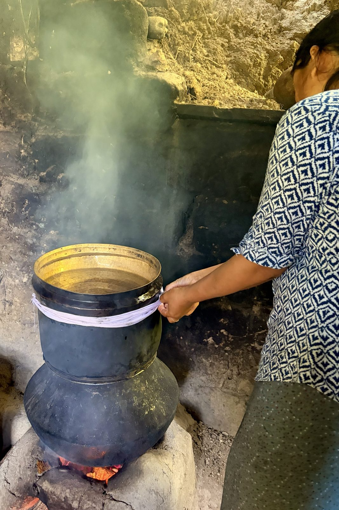
Making ara: fermented grain below, a bowl of cold water on top, a cloth to seal the joint.
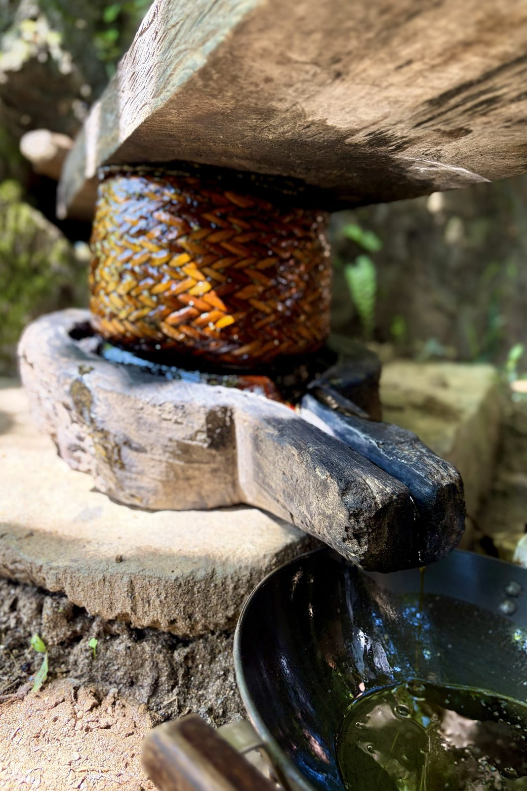
A wooden lever press squeezing safflower oil out through a woven cane ring.
Ara is the farmhouse spirit, and every household makes its own — from rice, maize, barley, wheat or millet, whatever the farm grew. The fermented grain is heated in the bottom pot; the vapour rises, hits the underside of a bowl of cold water sitting on top, condenses, and drips into a cup hidden inside. The rag wound round the middle keeps the steam in. It comes out clear and anywhere from mild to fierce, and is served warm, sometimes with butter and a scrambled egg stirred in, as a morning drink. Etiquette says the host offers and the guest declines — meshu meshu, "no, no" — once or twice before accepting; the cup keeps coming either way.
Next to it, the oil press: crushed safflower seed is packed into a woven cane ring, a heavy beam is levered down on top, and the oil runs out of a spout cut into the base. Safflower is the thistle-like plant whose orange petals were once a cheap stand-in for saffron; here it is grown for its seed, and the oil goes straight into the farm kitchen. It's the kind of thing every farm once had and few still use.
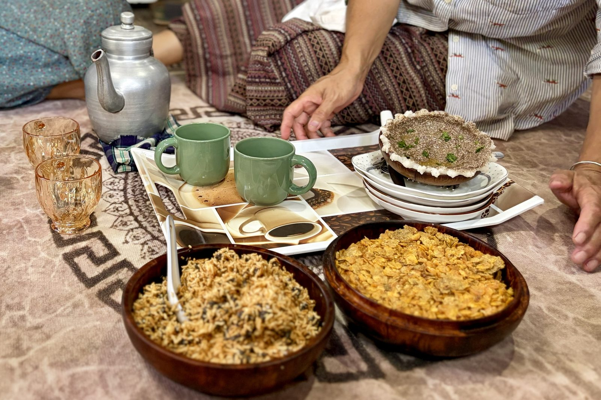
On the floor, the way it's done: tea from the aluminium pot, ara in the little glasses, and bowls of roasted rice and flattened corn to snack on.
Then everyone sat down on the floor for tea and snacks. Bhutanese hospitality runs on tea — usually suja, butter tea made with salt rather than sugar — and on bowls of roasted rice (zaw) and flattened, toasted corn to eat by the handful between cups. Ours came with homemade ara, from the same pot still. The white scarf in the photo with our guide is a khadar, the scarf of welcome and good wishes given to a guest; you accept it with both hands.
Punakhahomestayarafood
Wed 30 September · Khamsum Yulley Namgyal Chorten
Up through the rice to the Queen's chorten
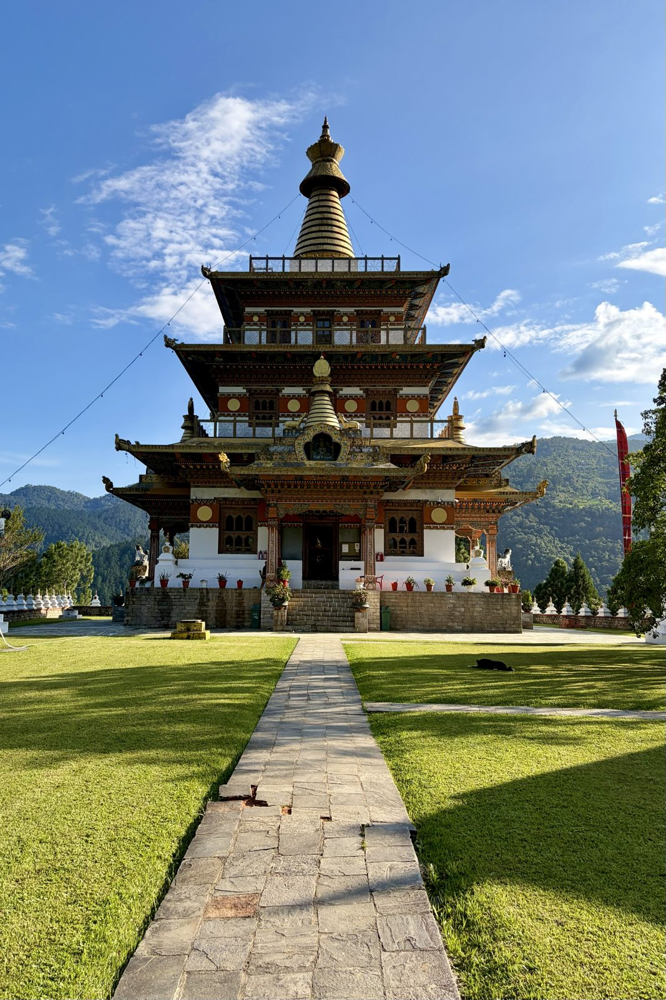
Khamsum Yulley Namgyal Chorten, straight on.
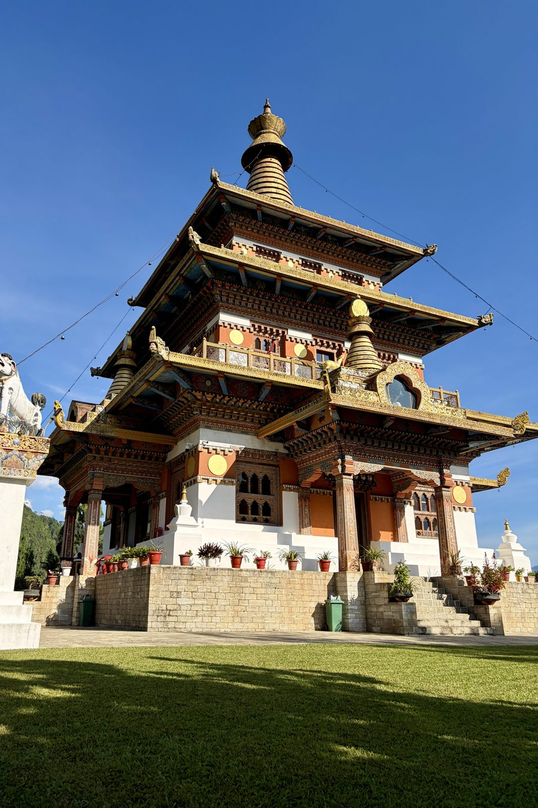
Three storeys of carving and gold leaf.
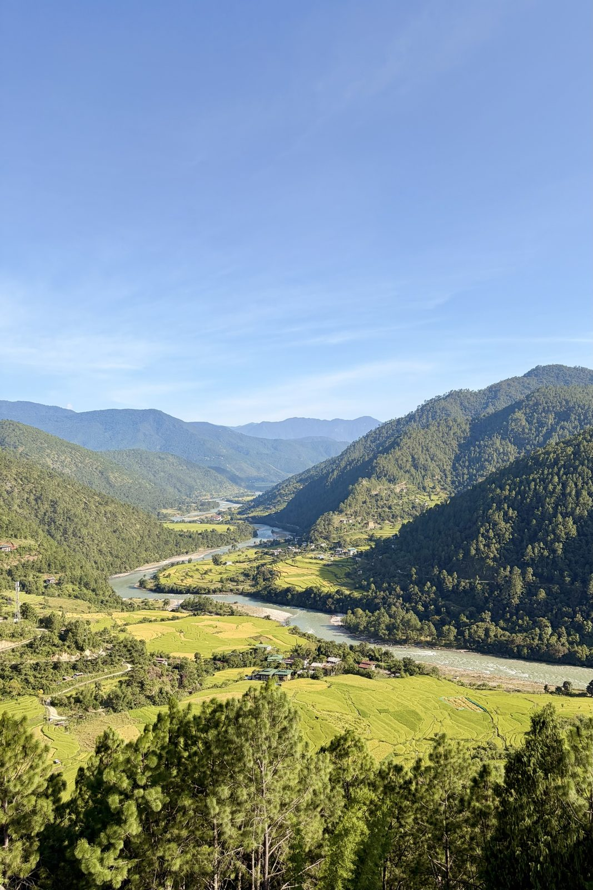
The view from the top: the Mo Chhu and the rice ready for harvest.
A walk up from the river through the paddies — gold now, a week or two from harvest — to a temple on a hilltop above the Mo Chhu. It looks centuries old and isn't: Khamsum Yulley Namgyal Chorten was commissioned by Queen Mother Ashi Tshering Yangdon Wangchuck and consecrated in 1999, built to protect the then Crown Prince, now the Fifth King, and to bring peace to the world. The name means roughly "the chorten of victory over the three worlds".
What makes it unusual is how it was designed. There were no architect's drawings; the builders worked from proportions laid down in Buddhist scripture, the way temples were made for centuries. Inside, the floors are filled with large and fierce protective deities — chiefly Vajrakilaya, wielding his ritual dagger — and stairs lead up to a roof terrace with the view in the last photo: the whole valley, river and rice terraces, stretching back toward Punakha.
Punakhatemplewalk
Wed 30 September · Punakha suspension bridge
The bridge that bounces
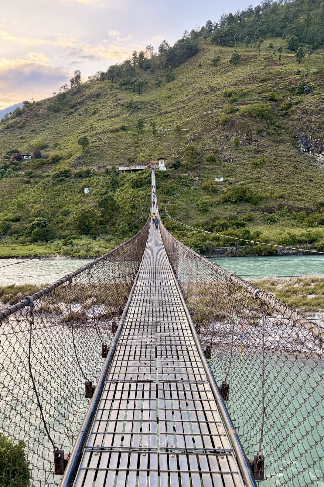
About 180 metres of steel and cable over the Pho Chhu.
Just upstream from the dzong, a long suspension bridge crosses the Pho Chhu — one of the longest in Bhutan, at around 180 metres. It moves under your feet, side to side as well as up and down, and moves more when someone in the middle decides to find out how much. It isn't there for tourists: people from the villages on the far bank use it every day, and the prayer flags tied along the cables are theirs.
The two rivers that meet at Punakha are paired as male and female: the Pho Chhu ("father river") and the Mo Chhu ("mother river"), which we'd looked down on from the chorten. Punakha Dzong sits on the tongue of land where they join.
Punakhabridge
Wed 30 September · Dhumra, Punakha
Dusk over the dzong
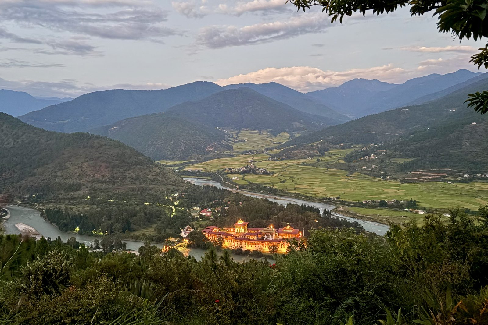
Punakha Dzong at the meeting of the two rivers, from Dhumra as the lights came on.
The second evening at Dhumra, and this time we caught it at dusk: the light going off the rice fields and the dzong coming on, sitting exactly where the Pho Chhu and Mo Chhu meet. Punakha Dzong was built in 1637–38 by the Zhabdrung, the Tibetan lama who unified Bhutan, and its full name, Pungthang Dewa Chhenbi Phodrang, means "palace of great happiness". It's the second-oldest and second-largest dzong in the country, the place where the First King was crowned in 1907 and where the Fifth King married in 2011 — and somewhere inside, sealed in a chapel few people may enter, the Zhabdrung's embalmed body is still kept.
PunakhaDhumradzong
Still to come
The astrology consultation and blessing, wearing gho and kira at Punakha Dzong, the night at Bumdra, coming down onto Tiger's Nest. And the guide and driver — the people usually turn out to be the story.
Nagarkot & Pokhara
6 – 7 October · the crossing, and two ridges
Nothing filed yet
Whether the Nagarkot sunrise delivered, how the transfer actually went, and the first sight of the Annapurnas from Sarangkot.
Mardi Himal
8 – 13 October · six days on the ridge
Nothing filed yet
Day by day if you want it that way, or just the parts worth keeping: the teahouses, the weather, how the bodies held up, whether Base Camp happened, and the walk down to Siding.
The last days
14 – 17 October · Pokhara, Bhaktapur, Kathmandu in Dashain
Nothing filed yet
The recovery day, Bhaktapur at dawn, and what Dashain looked like from the inside.